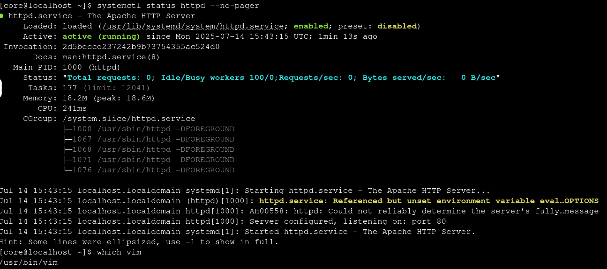

システム状態の確認
VM SSH session タブをクリックしてください。
|
SSH セッションが接続されない場合やエラーが発生した場合は、タブ名の横にある Refresh をクリックして再接続できます。プロンプトは次のようになります。 
ログインパスワードは |
bootc コマンドは、実行中のホストの状態とディスク上の利用可能なイメージを制御するものです。これにより、現在の状態の取得、更新の有無の確認、ロールの変更などを行います。bootc status コマンドで、その状態を確認できます。
sudo bootc status起動中のイメージと、ホスト上にステージングされたイメージやロールバックイメージがあるかどうかを確認できます。各イメージの名前、バージョン、ダイジェストがこの基本ビューに表示されます。これらの意味については後ほど詳しく説明します。
|
|
grep を使用して特定の部分に注目し、詳細な出力をセクションごとに確認してみましょう。spec セクションは、使用中のイメージと bootc が参照している場所に関する情報を提供します。このホストはコンテナレジストリからプルしています。
sudo bootc status | grep spec: -A 4staged セクションは、次回の起動用にディスクにプルダウンされた情報を提供します。新規インストール直後のため、現時点では null です。
sudo bootc status | grep staged:booted セクションは、実行中の状態の詳細を示します。イメージ仕様（場合によっては spec セクションと異なることがあります）、内部の ostree バージョン、イメージの SHA256 ダイジェストが含まれます。
sudo bootc status | grep booted: -A 8rollback セクションは、必要に応じて bootc が戻す先の状態の詳細を示します。新規インストール直後のため、現時点では null です。
sudo bootc status | grep rollback: -A 8VM での更新の確認とダウンロード
更新されたイメージがレジストリで利用可能になったので、bootc がそれを検出するか確認しましょう。
sudo bootc upgrade --checkbootc は spec に記載されたイメージを追跡しているため、レジストリに反映された時点で更新を検出します。SHA やバージョンなど、変更内容に関する詳細が表示されます。この更新をステージングしてみましょう。
sudo bootc upgrade更新がレイヤー単位でプルされることに注目してください。これは、ビルドしたコンテナイメージの内容に基づいています。vim のインストールによりかなり大きな変更が発生したため、大きな更新をプルする必要があります。
システム状態の確認
ディスク上で何が起きたか確認しましょう。
sudo bootc statusstaged セクションに、更新されたイメージの詳細が表示されます。これは bootc upgrade のデプロイフェーズによってディスク上に準備されたもので、次回の起動時にアクティブになります。
/etc での永続性のテスト
更新を適用する際、bootc は新しいイメージから /usr のすべての変更をプルし、新しいソフトウェアのインストールを可能にします。/etc へのローカルの変更は新しいイメージの内容と_マージ_され、ローカルの変更が優先されます。bootc イメージの /var 構造内のものは実行中のホストには適用されません。これは起動後のマシン状態と見なされるためです。
ユーザーパスワードを 1redhat に変更してテストしてみましょう。
echo 'core:1redhat' | sudo chpasswdステージングされると、変更は次回の再起動で反映されます。メンテナンスウィンドウを待つ必要がある場合は、変更の準備ができた時点でステージングし、再起動を後でスケジュールすることもできます。
では、システムを今すぐ再起動して変更を適用しましょう。
sudo rebootシステムの再起動が完了したら、新しい認証情報でログインできます。このユーザーの認証情報は /etc に保存されているため、新しいパスワードが有効になっています。
|
タブ名の横にある Refresh をクリックするか、タブ中央の「Reconnect」ボタンをクリックして再接続してください。プロンプトは次のようになります。
|
パスワード：
1redhatApache がまだ実行中で、vim がインストールされていることを確認しましょう。
systemctl status httpd --no-pagerwhich vim出力は次のようになるはずです。

これで、Containerfile から新しい image mode システムを作成し、システムの更新を管理する方法を学びました。これは、独自の標準ビルドやアプリケーションで RHEL の image mode を探索するための良い基盤となるでしょう。後のラボでは、rollback や switch など、利用可能な他のライフサイクルオプションを探索します。